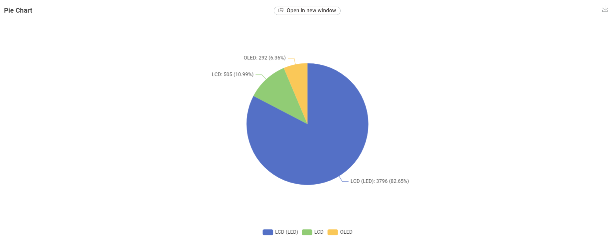
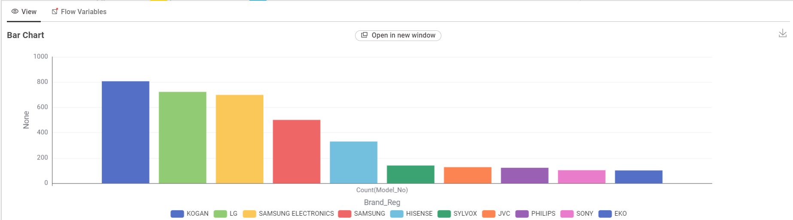
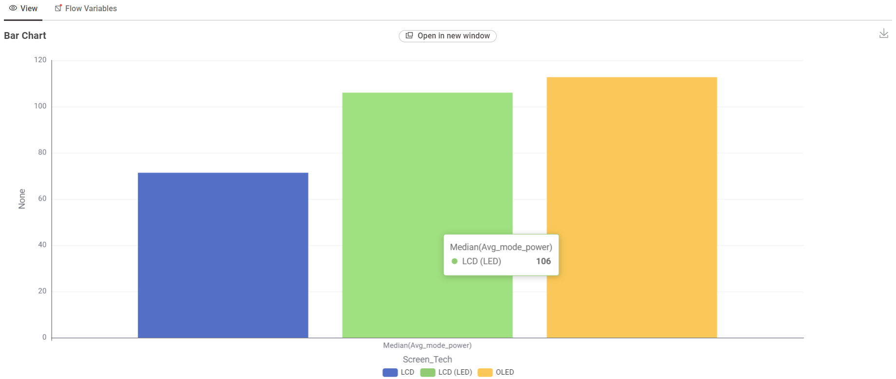
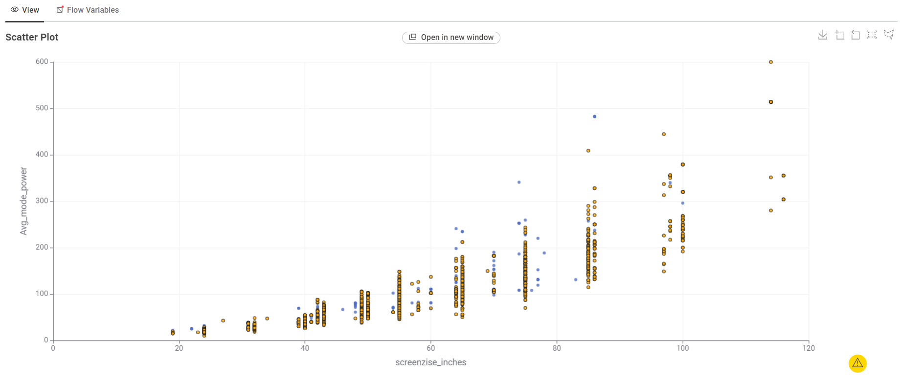
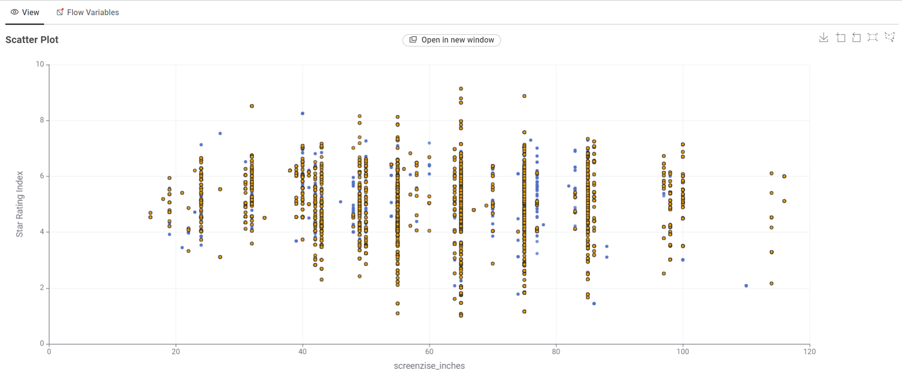

Why it matters
Appliances that run for many hours a day, such as fridges, heating and cooling, and televisions, can make a noticeable difference to yearly running costs.
Energy prices keep rising, and the appliances in an Australian home add up to a large share of each electricity bill. Watt Watch helps you compare how much energy common appliances use.
Appliances that run for many hours a day, such as fridges, heating and cooling, and televisions, can make a noticeable difference to yearly running costs.
Many appliances sold in Australia carry an Energy Rating label showing a star rating and an estimated yearly energy use in kilowatt hours (kWh).
Figures for layout only.
The dataset are published by the Australian Government that contains information about energy consumption of television in Australia.
1

2

3

4

5

6

5
When choosing a TV, most of the customer will choose based on the brand and efficiency. 65 inches was the most preferable.
Watt Watch is a student project that presents appliance energy consumption in the Australian market as clear, easy to explore visualisations.
To help households compare appliances before they buy, so they can choose models that are cheaper to run.
The energy figures will come from the Australian Government Energy Rating product data, cleaned and transformed before use.
+6019-2345678.